2Glue the plinth and 2 × seatboard onto the trunk 3D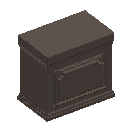2 burr walnut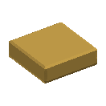3, 4 ×2 gilt brass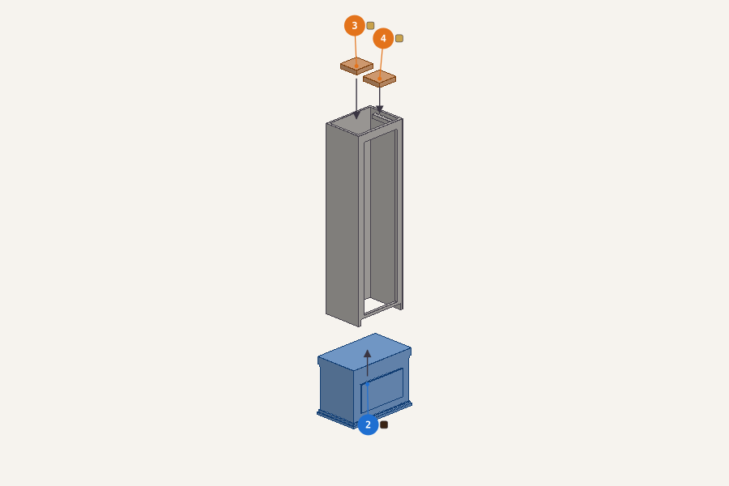2 plinth burr walnut onto 1 trunk34 seatboard right gilt brass onto 1 trunk
3At the bench: build the dial plate, with the dial mask bottom, the dial mask top and 2 × dial maskBuild this on its own first 3D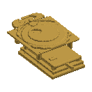5 gilt brass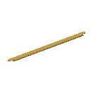6 gilt brass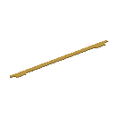7 gilt brass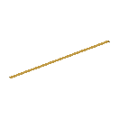8, 9 ×2 gilt brass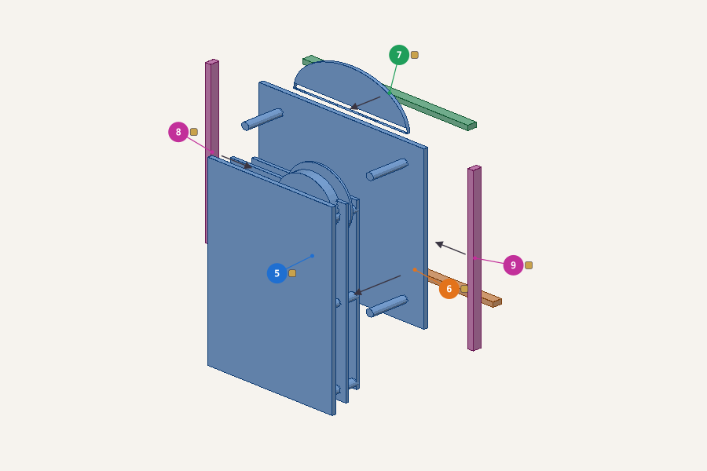5 dial plate gilt brass — start of this assembly6 dial mask bottom gilt brass onto 5 dial plate7 dial mask top gilt brass onto 5 dial plate89 dial mask left gilt brass onto 5 dial plate
4Glue the pendulum rod upper and the hood front head onto the dial plate 3D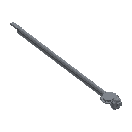10 steel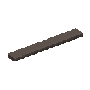11 burr walnut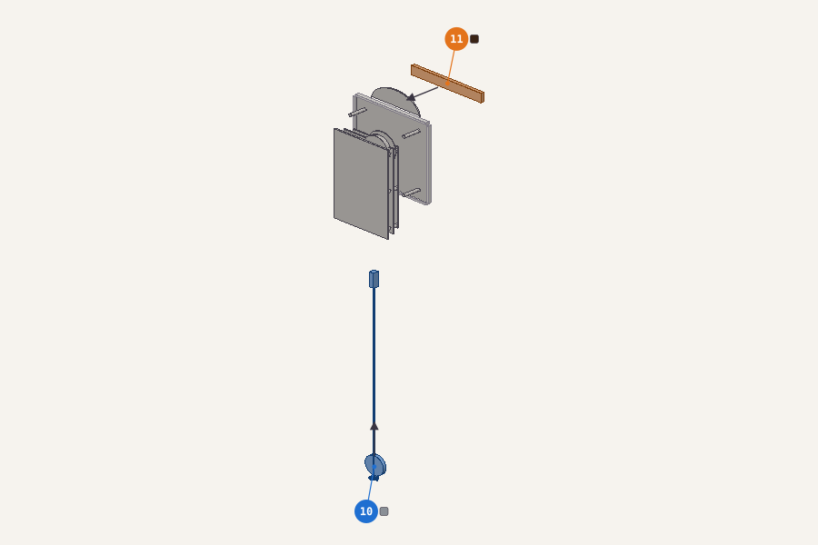10 pendulum rod upper steel onto 5 dial plate11 hood front head burr walnut onto 5 dial plate
5At the bench: build the hood, with 3 × hood front pilaster, the hood front rail and the hood columnBuild this on its own first 3D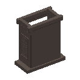12 burr walnut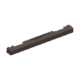13, 14, 16 ×3 burr walnut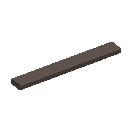15 burr walnut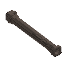17 burr walnut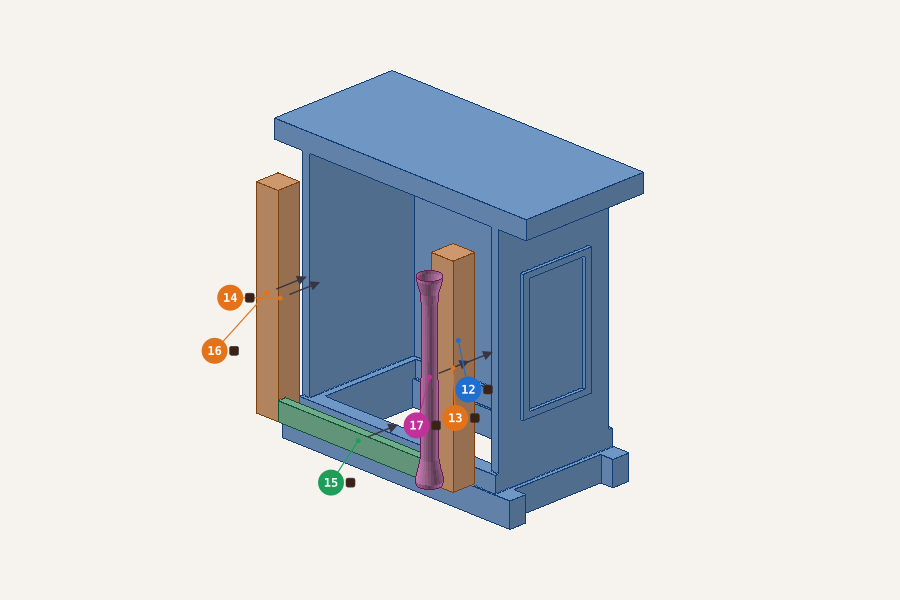12 hood burr walnut — start of this assembly131416 hood front pilaster burr walnut onto 12 hood15 hood front rail burr walnut onto 12 hood17 hood column burr walnut onto 12 hood
6Glue 2 × hood quarter column, the hood arch, the pediment return n and the pediment return p onto the hood 3D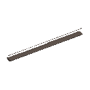18, 19 ×2 burr walnut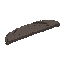20 burr walnut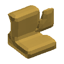21 gilt brass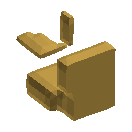22 gilt brass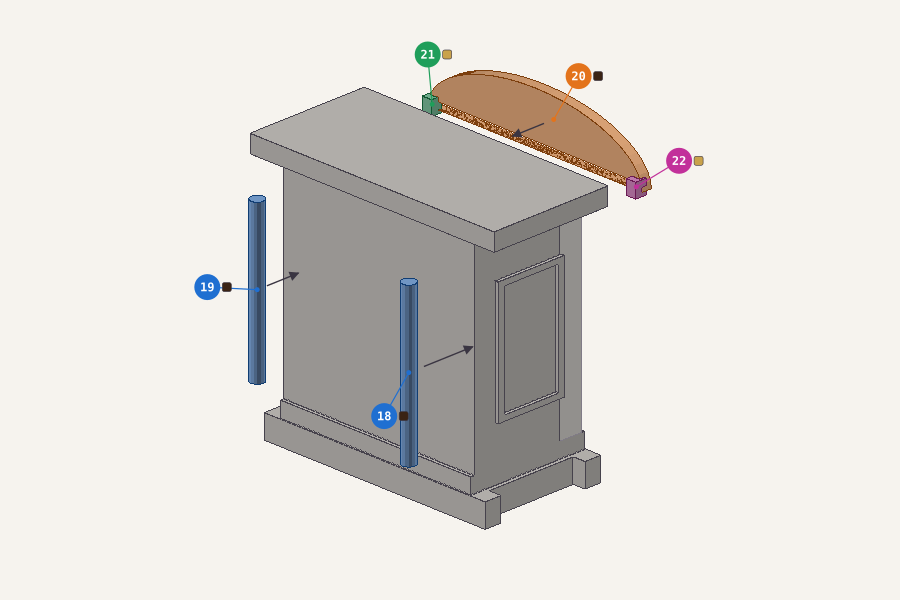1819 hood quarter column burr walnut onto 12 hood20 hood arch burr walnut onto 12 hood21 pediment return n gilt brass onto 20 hood arch22 pediment return p gilt brass onto 20 hood arch
7Glue the hood column, the caddy and the finial onto the hood 3D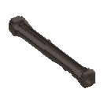23 burr walnut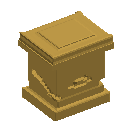24 gilt brass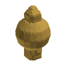25 gilt brass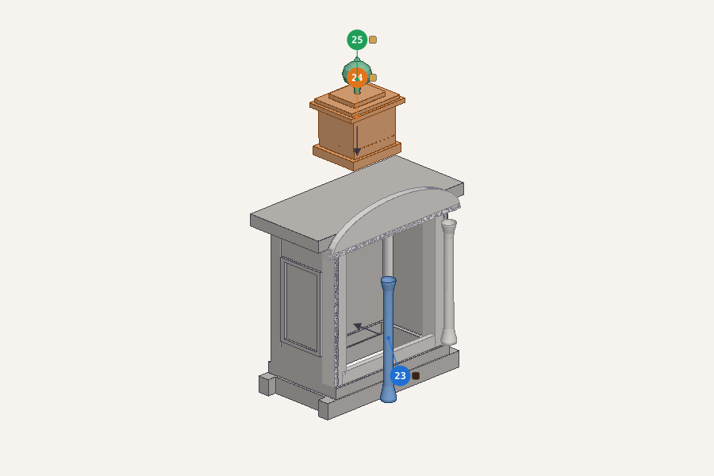23 hood column burr walnut onto 12 hood24 caddy gilt brass onto 12 hood25 finial gilt brass onto 24 caddy
8Fit the hood assembly onto the dial plateFit it 3D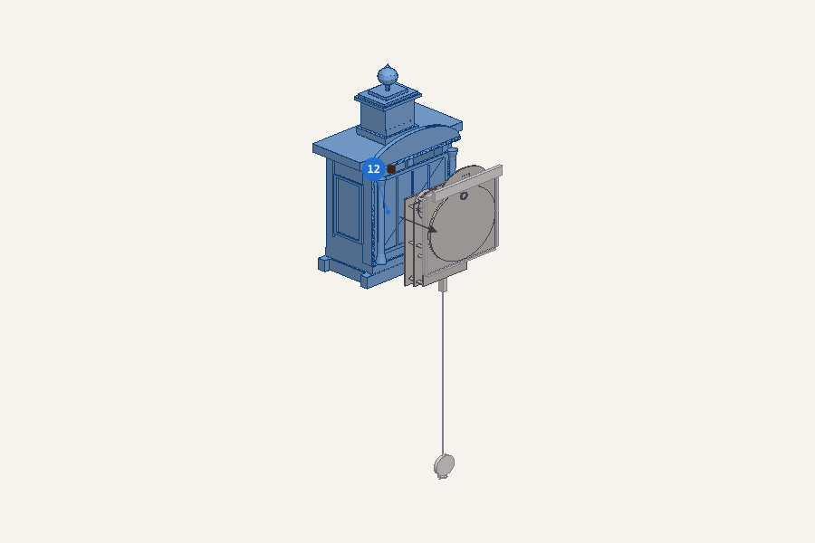12 the hood assembly onto 5 dial plate
9Fit the dial plate assembly onto the trunkFit it 3D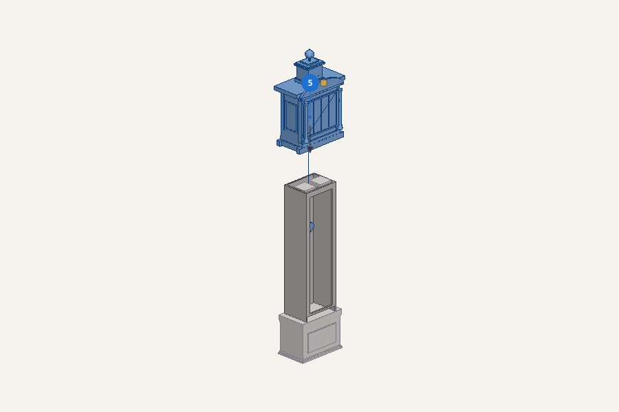5 the dial plate assembly onto 1 trunk
10Glue the weight onto the trunk 3D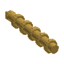26 gilt brass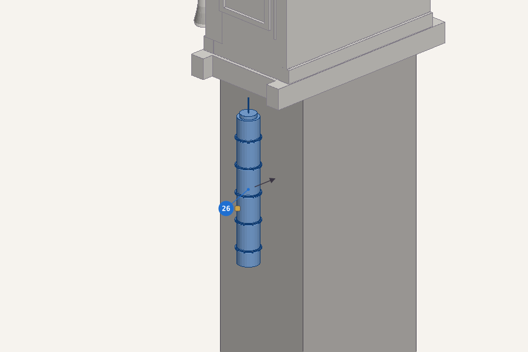26 weight gilt brass onto 1 trunk
11Details, last: the hand minuteFragile: fit these last 3D27 blued steel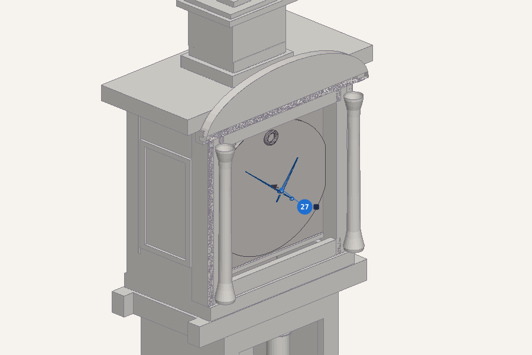27 hand minute blued steel onto 5 dial plate
12At the bench: build the trunk door, with the lenticle glassBuild this on its own first 3D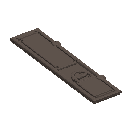28 burr walnut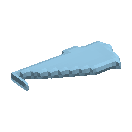29 glass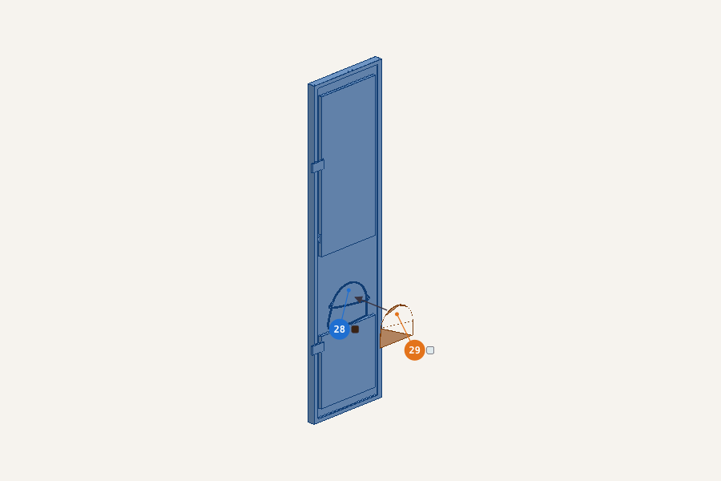28 trunk door burr walnut — start of this assembly29 lenticle glass glass onto 28 trunk door clear
13Hang the trunk door assembly on the trunkIt moves: glue it shut, or leave it unglued to show it open 3D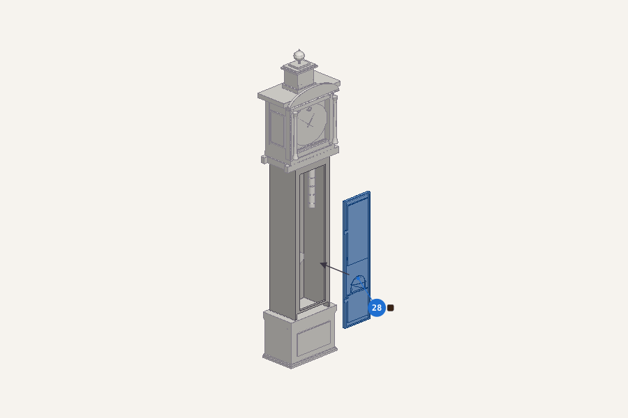28 the trunk door assembly onto 1 trunk
14At the bench: build the hood door, with 4 × hood door glassBuild this on its own first 3D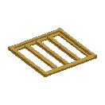30 gilt brass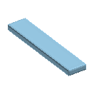31, 32, 33… ×4 glass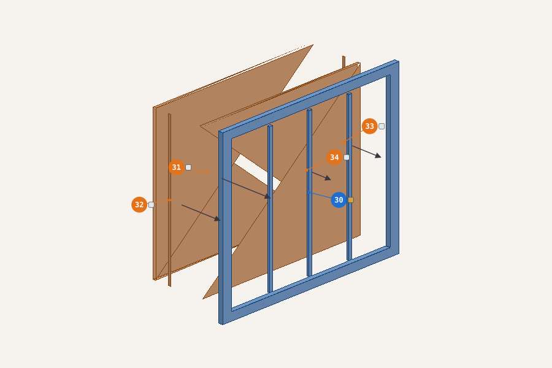30 hood door gilt brass — start of this assembly31323334 hood door glass glass onto 30 hood door clear
15Hang the hood door assembly on the hood columnIt moves: glue it shut, or leave it unglued to show it open 3D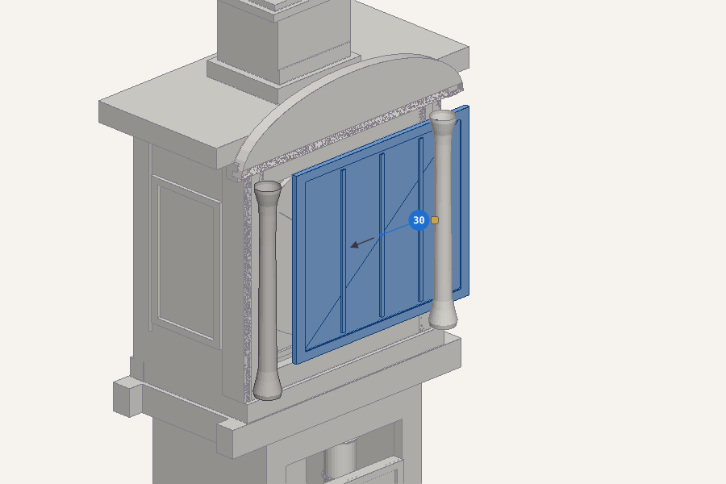30 the hood door assembly onto 23 hood column